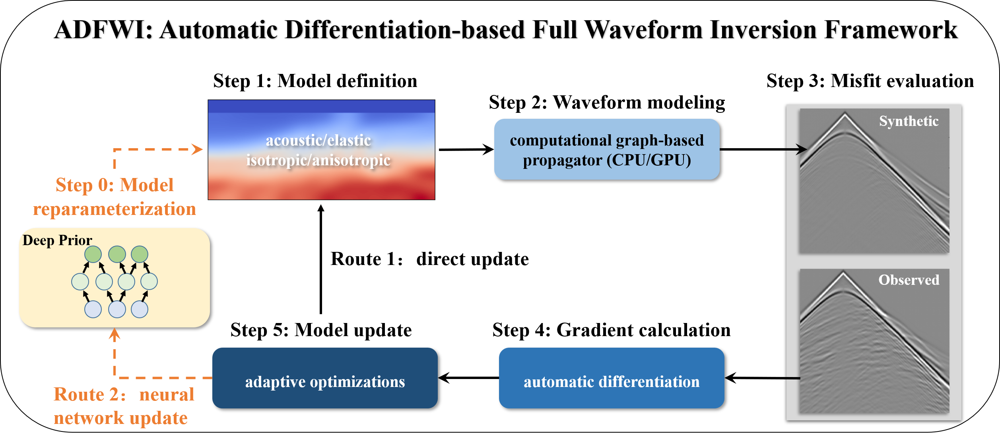
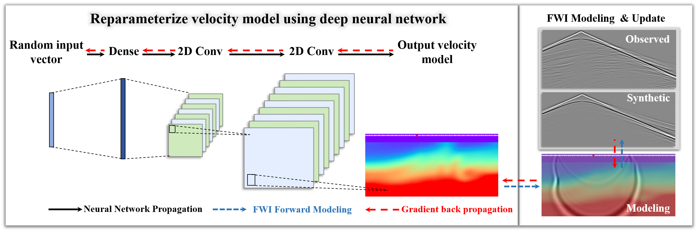

Overview
Introduction
ADFWI is an open-source framework for high-resolution subsurface parameter estimation by minimizing discrepancies between observed and simulated waveform. Utilizing automatic differentiation (AD), ADFWI simplifies the derivation and implementation of full waveform inversion (FWI), enhancing the design and evaluation of methodologies. It supports wave propagation in various media, including isotropic acoustic, isotropic elastic, and both vertical transverse isotropy (VTI) and horizontal transverse isotropy (HTI) medias.
In addition, ADFWI provides a comprehensive collection of Objective functions, regularization techniques, optimization algorithms, and deep neural networks. This rich set of tools facilitates researchers in conducting experiments and comparisons, enabling them to explore innovative approaches and refine their methodologies effectively.


Features
Automatic Differentiation for Gradient Computation
Eliminates manual adjoint-state derivation by leveraging automatic differentiation (AD) for efficient gradient computation.Versatile Wave Propagation Models
Supports isotropic acoustic, isotropic elastic, and anisotropic (VTI & HTI) wave simulations for broader subsurface imaging applications.Modular and Customizable
Easily integrates custom objective functions, regularization techniques, optimization algorithms, and deep neural networks for flexible method development.Advanced Optimization and Regularization
Includes L-BFGS, Adam, SGD, total variation, sparsity constraints, and physics-guided priors for stable and robust inversion.Deep Learning Integration
Supports deep priors, learned regularization, and uncertainty quantification, enhancing traditional FWI approaches.Benchmark Datasets and Reproducibility
Provides ready-to-use datasets (Marmousi2, Overthrust) for standardized evaluation and comparison.Open-Source and Extensible
Encourages community contributions, allowing researchers to expand functionalities and adapt ADFWI to novel FWI challenges.
Installation
To install ADFWI, please follow these steps:
Ensure Prerequisites
Python 3.8+: Python Downloads.
Create a Virtual Environment (Optional) It is recommended to create a virtual environment using
conda:conda create --name adfwi-env python=3.8 conda activate adfwi-env
Install Required Packages
Method 1: Clone the github Repository This method provides the latest version, which may be more suitable for your research:
git clone https://github.com/liufeng2317/ADFWI.git cd ADFWI
Then, install the necessary packages:
pip install -r requirements.txt
Method 2: Install via pip Alternatively, you can directly install ADFWI from PyPI:
pip install ADFWI-Torch